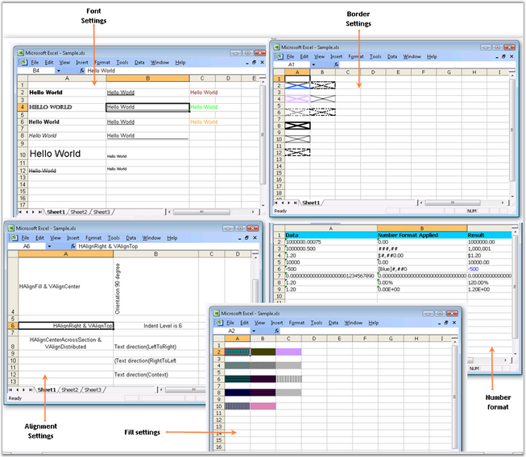
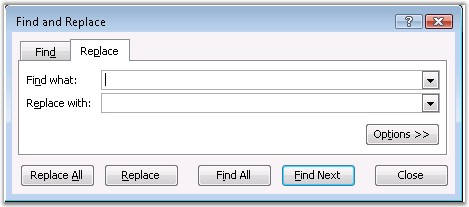
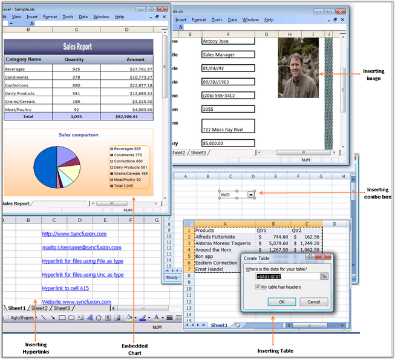
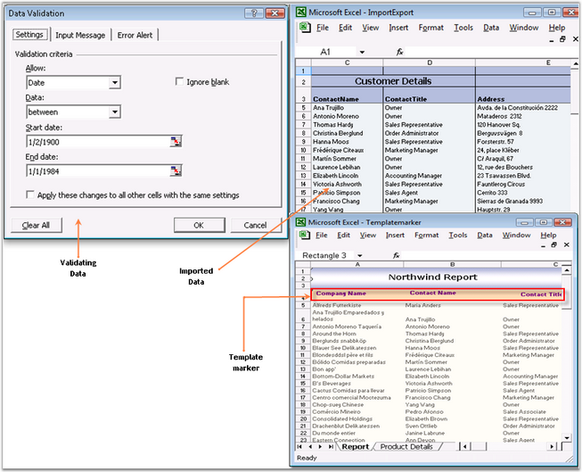

This section provides a list of important features of Essential XlsIO with their definition and usage.
· Formatting: Essential XlsIO provides various formatting options like setting fonts, alignment of content, number formatting, border settings and color-fill settings. It also supports various styles for cells and conditional formatting options.
The following screen shot shows various formatting options provided in Essential XlsIO.

Figure 25: Various Formatting options
· Editing: Essential XlsIO supports range manipulations like copying a range, moving a range, and so on, and Find and Replace option as part of editing the document.
The following screen shot shows the Find and Replace dialog box.

Figure 26: Find and Replace
· Insert Options: Various components like chart, pictures and tables can be inserted into the document. It also provides support for insertion of controls like text boxes, check boxes and combo boxes, headers and footers, and links.
The following screen shot shows the insert options available in Essential XlsIO.

Figure 27: Various Insertion Options
· It provides support for data validation and import/export of data. It also provides data filter and template markers for efficient data handling.
The following screen shot shows data validation, import and export, and template marker features provided by Essential XlsIO.

Figure 28: Data-related Features
· Add-Ins: Essential XlsIO provides several add-ins for Microsoft Excel.
The following image shows the Bloomberg add-in.

Figure 29: Bloomberg Add-in